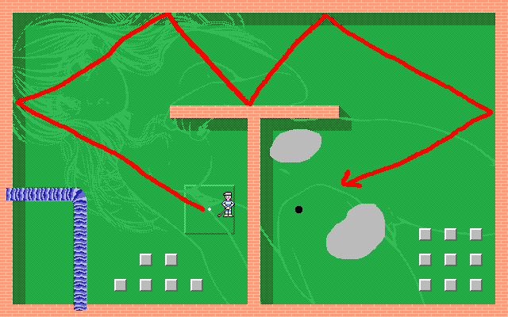
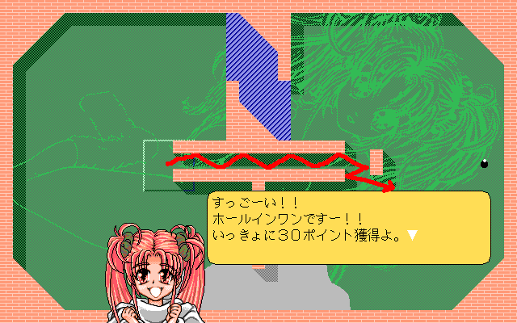
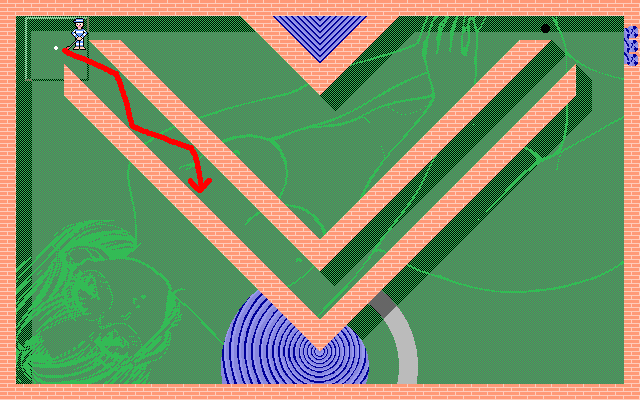
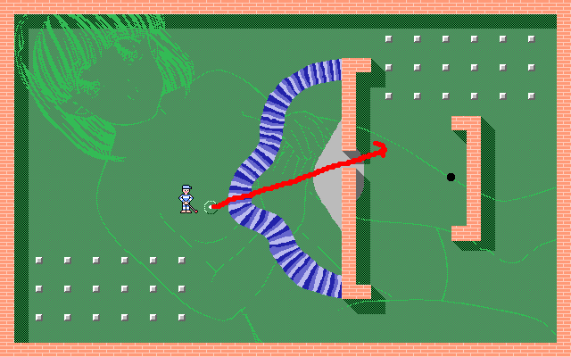
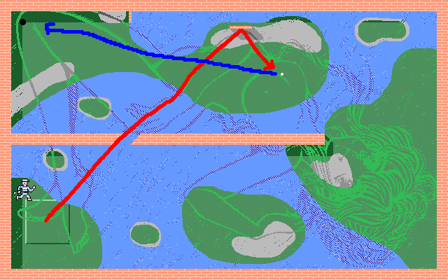
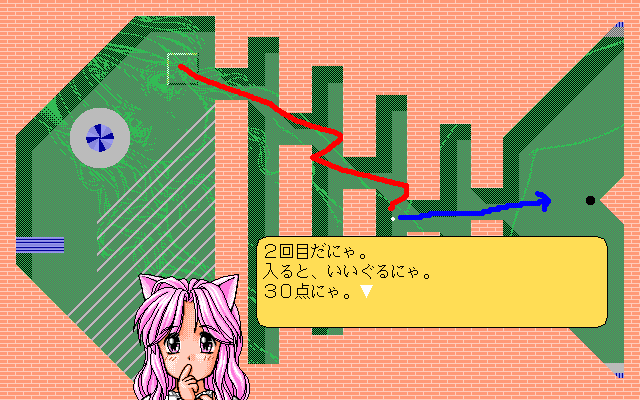
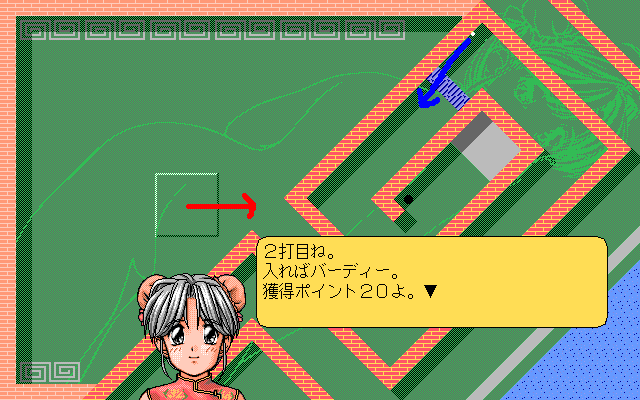
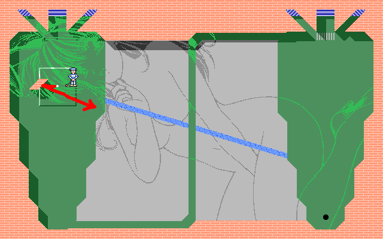
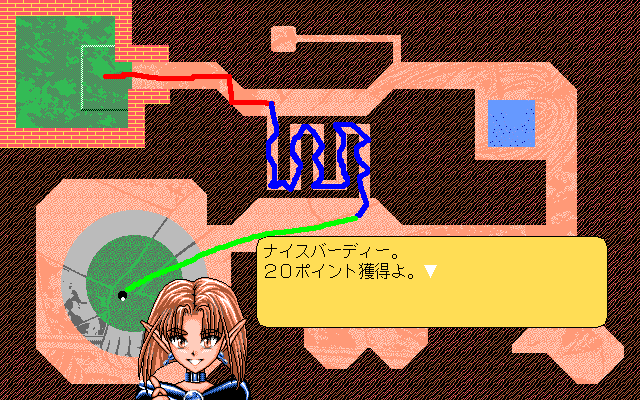

監獄カントリークラブ （ドールハウス）
発売：１９９６年 メディア：ＰＣ９８（ＦＤ５枚組）
最終更新日 2006.01.20
−概要＆感想−
主人公はなぜかとある監獄に囚われていた。その監獄で囚人の慰安イベントと銘打ってゴルフコンペが開催されることになった。しかし会場は監獄なだけあって、固い壁に囲まれている。壁の反射をうまく利用してカップインを目指す主人公。ごほうびはコンパニオンの女の子・・・というノリのゴルフもどき脱衣ゲーム。
何と言っても監獄とゴルフゲームを結びつける発想が面白すぎ。このノリは何でもアリな美少女ゲームならではのものであろう。女の子のＣＧは相変わらずとっても可愛い。Ｈ用語は自分で設定できるので、伏せ字ナシでそのものズバリの言葉にすることができる。このシステムは個人的に非常に嬉しい（笑）
−攻略指針−
ゴルフゲームとなっているが実際はほとんどビリヤードゲーム。壁の反射を利用するため打つ方向がわずかに狂っただけでドツボにハマるが、アイコンの設定がわかりにくいので試し打ちを何度か行って感覚を掴む必要がある。コンパニオンの女の子を落とすには、他のキャラからもらったアイテムが必要（前作のＶＺＯＮＥと類似）。
−詳細攻略−
■ 第１ホール 沢井 久美 Ｔバック（パー３）
左の壁に向けてフルスイングする。うまくいけばホールインワンも可能。
花をゲット。コンパクトを要求される。

■ 第２ホール 鈴木かれん 究極の３択（パー３）
筒に斜めに入るようにしてこれもフルスイングする。ホールインワンも可能。
ポーチをゲット。本を要求される。

■ 第３ホール シスター・マリア Ｖゾーン（パー３）
下の池越えに目がいくが、こちらは池ポチャの可能性が高いので、ここも筒の中を通り抜けるようにフルスイング。ちなみに私は反対方向に打ってクリアした。
本をゲット。聖書を要求される。

■ 第４ホール 井上 理子 狭き門（パー３）
スタート位置が乳首というのがすごい面。壁の隙間を狙ってフルスイングする。
香水をゲット。バイブを要求される。

■ 第５ホール プリンセル・パール ウォーターワールド（パー４）
斜めの壁の隙間を狙ってフルスイングすれば楽勝。イーグルを取れる。
コンパクトをゲット。貝を要求される。

■ 第６ホール みるく おさかな（パー４）
このゲームで最大に難しいホール。良くこんなデザインを考えついたものだ。
右下４時方向に打って一回で背骨を突破しないとドツボにハマる。バーディ狙いで行こう。
同人誌をゲット。花を要求される。

■ 第７ホール フェイ・リー ラーメンエッジ（パー３）
これも難しいホール。７割のスイングで右側に水平に打ち、池手前に止めれば成功。バーディを狙おう。
聖書をゲット。ポーチを要求される。

■ 第８ホール 辻村 今日子 キャロット（パー３）
左側の小さい斜めの壁に直角にフルスイングすればフェアウェイに止まるのであとは楽勝。
貝をゲット。香水を要求される。

■ 第９ホール ルシファ 胎内（パー４）
めんどくさそうだが意外に簡単。１打目は右側に水平にハーフスイング。２打目は曲がりくねったコースに向けて打ち込む。池のあるコースを遠回りする方法もあるが、万が一強く打ちすぎて袋小路に入ってしまうとドツボにハマる。
バイブをゲット。

（参考文献）
・ＢＵＧＢＵＧ １９９６年４月号 （１９９６年）
リストへ戻る